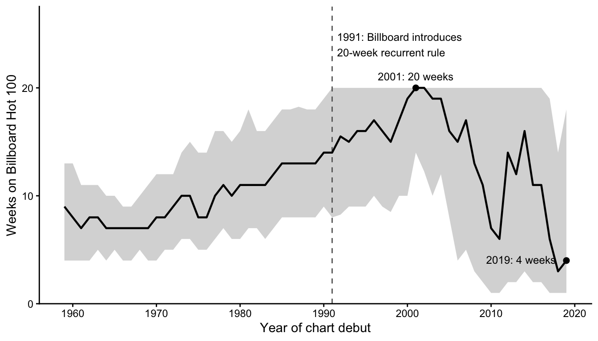
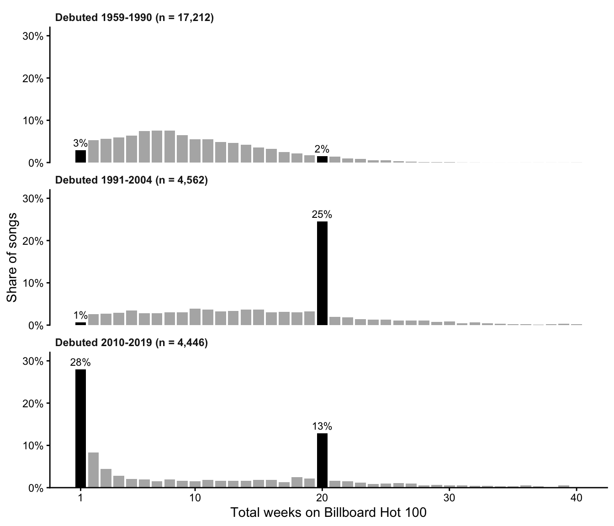
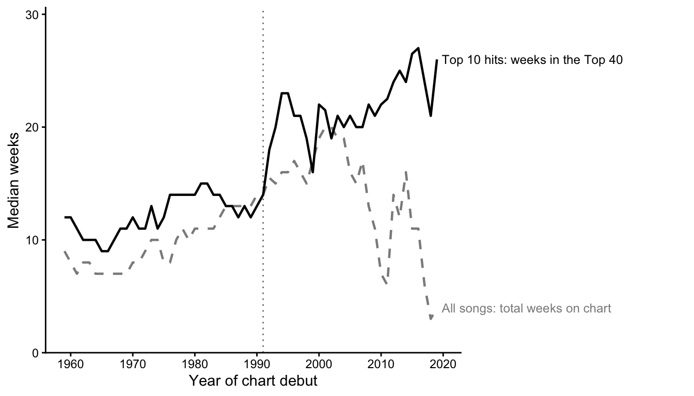

Are Hit Songs Getting More Disposable?: Changes in Longevity of Songs over Time
Version A: Scientific article
Chart longevity rose for four decades, then fell
A common claim about the streaming era is that popular music has become more disposable: songs rise quickly and are forgotten just as fast. Weekly Billboard Hot 100 charts allow this claim to be examined over six decades. I collapsed 327,895 weekly chart entries into one data point per song and measured each song’s longevity as its total number of weeks on the chart, including re-entries, for the 28,122 songs that debuted between 1959 and 2019.
Figure 1 shows the median chart run by year of debut. Longevity rose steadily for four decades, from roughly 7–9 weeks in the 1960s to a peak of 20 weeks for songs debuting in 2001, before falling sharply to a median of 4 weeks in 2019. Taken at face value, this trajectory supports the disposability claim. However, the distribution around the median suggests that this reading is incomplete: from 1991 onward, the upper quartile is fixed at almost exactly 20 weeks, a ceiling that coincides with a change in the way Billboard assigned these rankings. We examine this pattern in the following section.
Two discontinuities in the distribution of chart runs
Medians summarise the centre of a distribution but can ignore some important patterns. Figure 2 therefore shows the full distribution of chart-run lengths for songs debuting in three periods: before the 1991 methodology change (1959–1990), after the change but before digital downloads became widespread (1991–2004), and the download and streaming era (2010–2019). Songs debuting 2005–2009 are omitted as a transition period.
Before 1991, chart runs follow a smooth, right-skewed distribution: runs of exactly 20 weeks account for 2% of songs, no different from neighbouring lengths. Among songs debuting in 1991–2004, 25% leave the chart at exactly 20 weeks. This discontinuity links to Billboard’s recurrent rule, introduced in 1991, which removes a song from the Hot 100 once it has charted for 20 weeks and fallen below No. 50. This was done to make space for newer songs by getting rid of the bottom half of songs that have charted for a long time.
A second discontinuity appears in 2010–2019, when 28% of songs (1,245 of 4,446) spend a single week on the chart, compared with 3% before 1991. They reflect a release pattern in which tracks from newly released albums briefly enter the chart on first-week downloads or streams. Together, these two features account for much of the trajectory in Figure 1. The rise in median longevity after 1991 coincides with a policy-imposed ceiling, while the decline after 2005 is driven largely by a growing mass of single-week entries at the bottom of the chart.

Top hits have grown more durable
I then restricted the analysis to songs that peaked in the Top 10 (n = 4,837) and measured how many weeks each spent in the Top 40. The rule of getting rid of songs that spent more than 20 weeks on the chart applies only to songs below No. 50, and single-week entries almost never reach the Top 10: of the 1,245 one-week songs debuting in 2010–2019, only one did.
Figure 3 compares this measure with the all-song median from Figure 1. The two series track each other closely until the early 2000s, then diverge. While the median song’s total chart run fell, Top 10 hits continued to grow more durable. Consistent with longer stays at the top, fewer songs reached the Top 10 each year, falling from an average of about 106 per year in the 1960s to about 52 per year in the 2010s.
Taken together, the three figures suggest that the Hot 100 has not become uniformly more disposable. The bottom of the chart now turns over faster than at any point in its history, but the songs at the top remain there longer than ever. Apparent trends in chart longevity depend substantially on how the chart itself is constructed.
Further examination of the data and research into Billboard’s ranking methods may give us insight into the reason behind these trends which might be much deeper than the advent of streaming platforms.
